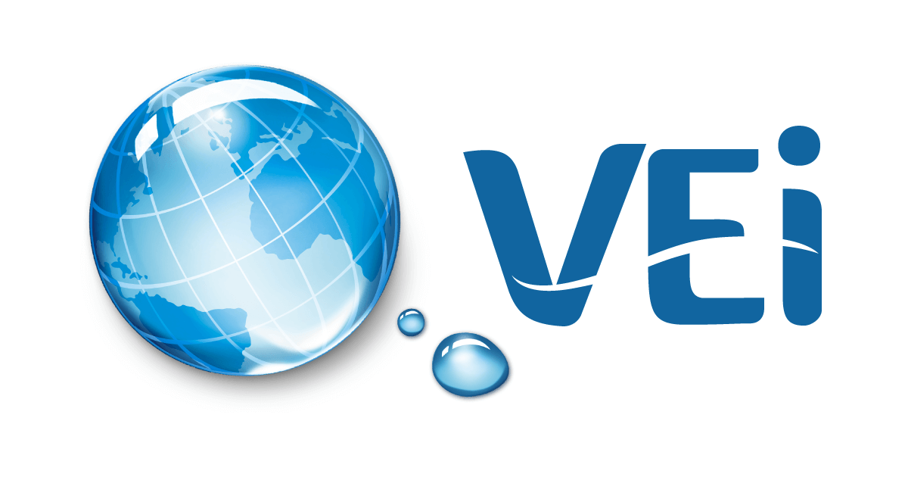
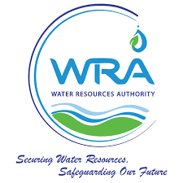

Key Research Areas
Click on cards to learn more
CIWAB’s research agenda focuses on understanding and addressing water security challenges across catchments. Our interdisciplinary approach integrates hydrology, data systems, governance, ecology, socio-economics, and technology-driven innovation to produce impactful knowledge for communities, institutions, and policy makers.
Click on cards to learn more

A multi-partner initiative enhancing governance, water safety planning, digital monitoring, and ecosystem protection across water value chains from source to consumer.

Investigating gender inclusion in mechanized agriculture and the link between tractor training, productivity, and water use efficiency.

Developing modern curricula for water professionals, integrating digital tools, emerging water challenges, and practical field skills.

